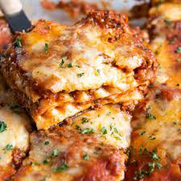

lasagna

Lasagna is a classic Italian dish featuring layers of wide pasta, savory meat sauce, creamy béchamel, and melted cheese. Baked to perfection, it delivers a delicious and comforting blend of flavors and textures.
ingredients
- Lasagna noodles
- Ground beef or a combination of beef and pork
- onion
- Garlic
- tomatoes
- Tomato paste
- Italian herbs
- salt and pepper
- butter
- all-purpose flour
- milk
- grated cheese
steps
- Preheat the Oven:
Preheat your oven to the temperature specified in your lasagna recipe, usually around 375°F (190°C).
- Boil the Lasagna Noodles:
Cook the lasagna noodles according to the package instructions. They should be al dente, as they will continue cooking in the oven. Once cooked, drain and set aside.
- Prepare the Meat Sauce:
In a large skillet or saucepan, brown the ground beef over medium heat. Add chopped onions and garlic, cooking until softened. Stir in canned crushed tomatoes or tomato sauce, tomato paste, Italian herbs, salt, and pepper. If using, add red wine for extra flavor. Simmer the sauce for at least 20-30 minutes, allowing the flavors to meld.
- Make the Béchamel Sauce:
In a separate saucepan, melt butter over medium heat. Stir in flour to create a roux. Gradually whisk in milk until the mixture thickens. Season with salt, pepper, and a pinch of nutmeg.
- Assemble the Layers:
In a baking dish, begin assembling the lasagna layers. Start with a layer of lasagna noodles, followed by a portion of the meat sauce, béchamel sauce, and grated cheese. Repeat the layers until the dish is filled, finishing with a generous layer of cheese on top.
- Bake in the Oven:
Cover the baking dish with aluminum foil and bake in the preheated oven for about 25-30 minutes. Then, uncover and bake for an additional 10-15 minutes or until the cheese is melted and golden.
- Rest and Serve:
Allow the lasagna to rest for a few minutes after removing it from the oven. This helps the layers set and makes it easier to slice. Serve warm, and enjoy your delicious homemade lasagna!